Douze modèles d'offre pour le bâtiment
Les six modèles de l'application notés sur 10, ce qui les empêche d'atteindre 8, leur version refaite, et six modèles nouveaux. Ta réponse se pose sous chaque image ; tout en bas, « Copier le texte » rassemble tes réponses pour me les coller.
Données inventées : entreprises, logos, clients, prix, IDE, IBAN. Les feuilles sont dessinées avec ce que le générateur de PDF sait rendre (tableaux, bordures, fonds, positions fixes). Aucune n'est encore passée par ce générateur : la preuve reste à faire avant le code. Les factures ne sont pas redessinées ici.
Les six modèles actuels, notés
La grille
Cinq critères, deux points chacun. Les notes sont les miennes ; la note qui compte viendra de la question 4 de ta fiche d'essai : « Le PDF : l'enverriez-vous tel quel à un client ? ».
| Modèle | Note | Visée | Ce qui coûte le plus |
|---|---|---|---|
| Technique | 6,5 | 8,5 | Barre de couleur décorative, unité collée à la quantité. |
| Bandeau | 6 | 8 | Le même document que Sobre avec un fond. |
| Sobre | 5,5 | 8 | Logo de 56 px, aucun caractère propre. |
| Atelier | 5,5 | 8 | Police datée, total en maigre. |
| Moderne | 5 | 8 | « OFFRE » domine la page, adresse hors de la fenêtre. |
| Épuré | 4 | 7,5 | Supprime les pièces et les sous-totaux. |
Aucun n'atteint 8. Trois points sur dix sont perdus par les six à la fois : voir « Défauts communs ». Les notes visées supposent ces défauts corrigés.
Technique
6,5 / 10visée 8,5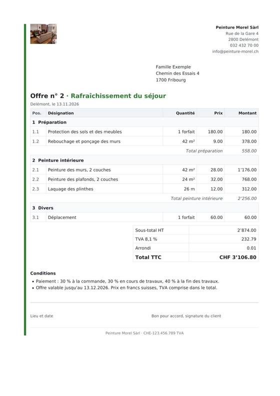
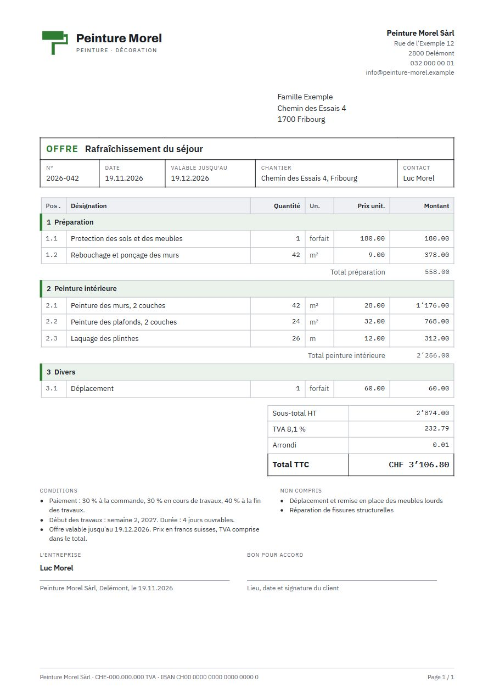
Pourquoi pas 8
- Le meilleur des six : positions numérotées, objet dans le titre. Il perd ses points ailleurs.
- La barre de couleur de 6 px sur toute la hauteur est un décor.
- L'unité est collée à la quantité, les chiffres sont dans la police du texte.
- La validité et le chantier manquent en tête.
Ce que je change
- Un cartouche comme sur un plan : objet, numéro, date, validité, chantier, contact.
- Colonne « Un. » à part, chiffres en police à chasse fixe.
- Repère de couleur sur chaque poste à la place de la barre.
Bandeau
6 / 10visée 8
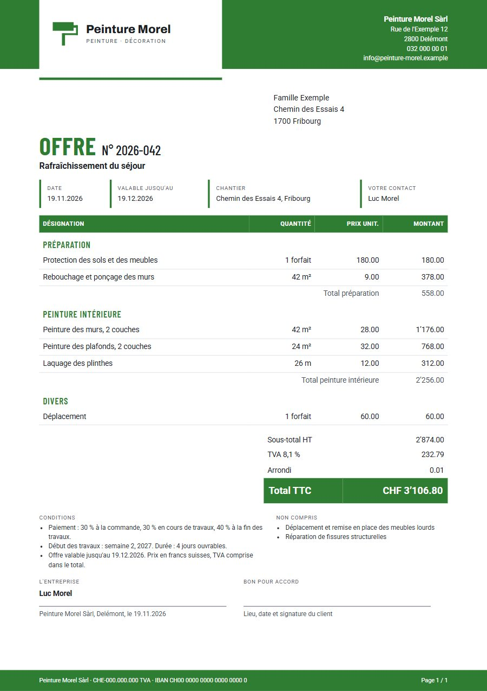
Pourquoi pas 8
- Même squelette que Sobre, avec un fond : posés côte à côte, deux fois le même document.
- La bande s'arrête aux marges ; le logo dans son cartouche blanc ressemble à une étiquette collée.
- Coordonnées en petit blanc sur la couleur.
Ce que je change
- Bande d'un bord à l'autre de la feuille, logo sur un onglet blanc qui descend de la bande.
- « OFFRE » en capitales étroites, postes en couleur.
- Bande de pied avec IDE, IBAN et numéro de page.
Sobre
5,5 / 10visée 8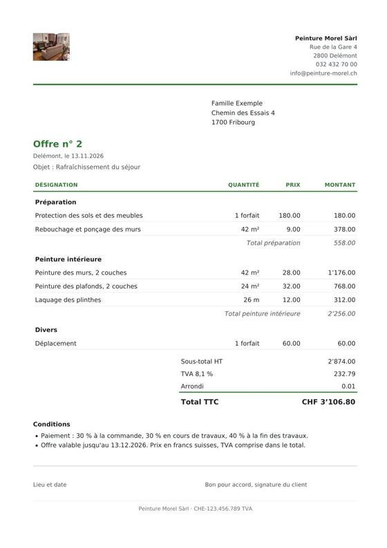
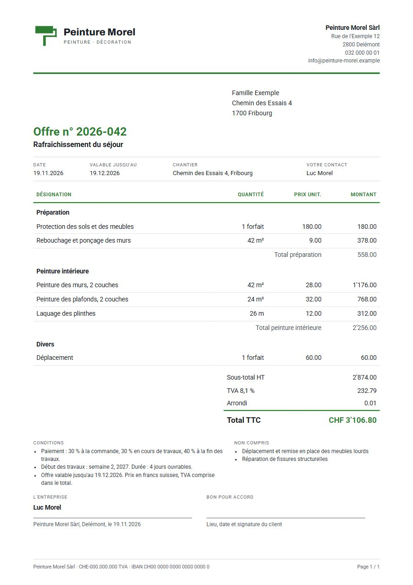
Pourquoi pas 8
- Logo plafonné à 56 px de haut (
document.css, ligne 14) : l'artisan pèse moins que son tableau. - Sous-totaux en italique gris : le niveau « poste » se lit mal.
- C'est le socle des cinq autres, sans caractère à lui.
Ce que je change
- Numéro en couleur, objet en gras dessous.
- Une ligne d'informations : date, validité, chantier, contact.
- Total en couleur sous un filet épais ; conditions et « non compris » côte à côte.
Atelier
5,5 / 10visée 8
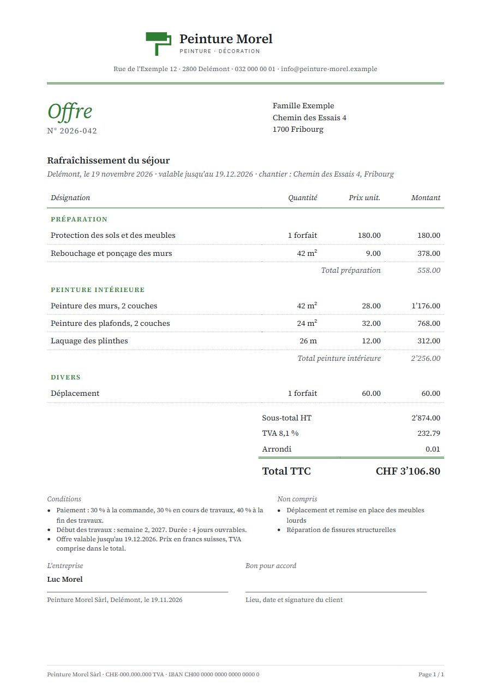
Pourquoi pas 8
- DejaVu Serif, la police à empattements livrée avec le générateur : elle date le document.
- Le total est en maigre : le chiffre le plus important est le moins appuyé.
- L'adresse du client est à gauche, à droite dans les cinq autres : l'artisan qui change de modèle change d'enveloppe.
Ce que je change
- Source Serif, « Offre » en italique de couleur.
- Adresse à droite comme les autres, total en demi-gras sous le double filet.
- Postes en petites capitales espacées.
Moderne
5 / 10visée 8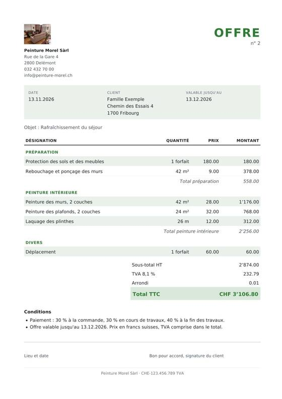
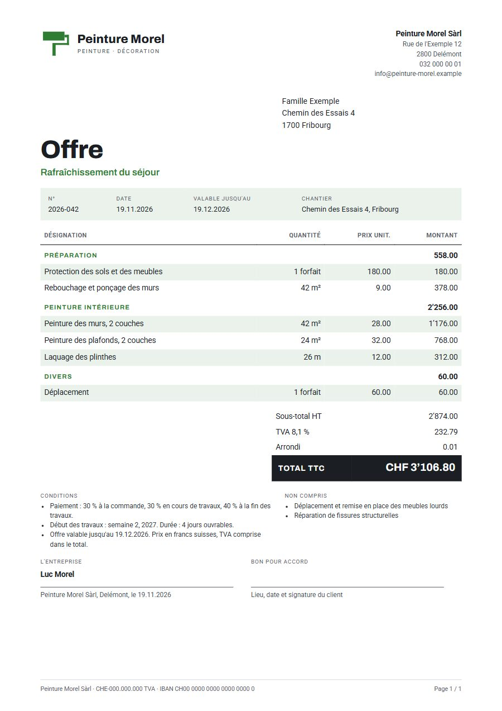
Pourquoi pas 8
- Le plus gros mot de la page est « OFFRE » en couleur (
document.css, ligne 85). Le nom de l'artisan, quand il n'a pas de logo, est deux fois plus petit. - L'adresse du client est dans un bandeau au milieu de la feuille : hors de la fenêtre d'une enveloppe.
- Le total est posé sur la teinte la plus pâle de la page.
Ce que je change
- Adresse dans la fenêtre ; le bandeau garde numéro, date, validité, chantier.
- « Offre » en noir, l'objet en couleur dessous : la couleur va à ce qui informe.
- Total en blanc sur anthracite, total de chaque poste sur sa ligne de titre.
Épuré
4 / 10visée 7,5

Pourquoi pas 8
- Il supprime les titres de poste et les sous-totaux (
_document.html.twig, lignes 72 et 84). Sur une offre par pièce, « Peinture des murs » revient trois fois sans dire où. C'est une perte d'information. - Le total, presque deux fois plus gros que le texte, sort du tableau et ne s'aligne sur aucune colonne.
- Titres de colonnes en gris
#7A8089: contraste de 3,98 sur le blanc (calculé), sous le seuil de 4,5 que le code impose à la couleur de l'artisan.
Ce que je change
- Les postes restent, en petites capitales grises, avec leur total sur la même ligne.
- Total dans la colonne des montants, sous un filet fin.
- Il plafonne à 7,5 : un modèle sans couleur ni filet porte peu l'identité de l'artisan.
Ce qui plafonne les six
Ces défauts tiennent au contenu et au générateur de PDF : ils demandent des champs nouveaux et une preuve en PDF. Les douze feuilles de la planche les supposent corrigés : chaque point demande ta décision.
1. Une seule police, celle par défaut
Le PDF sort en DejaVu Sans (src/Offre/DocumentPdf.php, ligne 43), sans autre police chargée. C'est la première cause de l'allure « document par défaut ».
Mesuré pour cette planche : Inter, la police de l'application, a des chiffres de largeur variable (« 1111 » fait 32,5 px, « 0000 » fait 50,5 px, à 20 px). Dans un PDF, ses montants ne s'aligneraient pas. Les feuilles utilisent donc des polices libres dont les chiffres ont tous la même largeur : Roboto, Source Serif 4, IBM Plex Sans et Mono (mesurées). Archivo et Barlow Condensed servent aux titres seulement.
À prouver avant le code : un PDF d'essai avec ces six familles intégrées, et son poids.
2. Rien sur le chantier
Ni adresse du chantier, ni début des travaux, ni durée : aucun champ dans le code. Dans le bâtiment, le client et le chantier ont souvent deux adresses (régie, propriétaire, résidence secondaire). Les feuilles montrent une ligne « Date, valable jusqu'au, chantier, votre contact », et le modèle Chantier en fait une fiche.
Demande des champs nouveaux sur l'offre : adresse du chantier, début, durée ; un nom de contact dans les réglages.
3. « Non compris » absent
Les conditions tiennent en deux puces. La liste de ce qui reste hors de l'offre (déplacer les meubles, l'électricité, la peinture de finition) évite la dispute de fin de chantier. Sur les feuilles : à droite des conditions.
Demande un champ sur l'offre, dictable, avec des phrases types par métier.
4. Une signature sur deux, et pas de place pour signer
Le document actuel ne porte que la signature du client, et le trait est au-dessus du libellé : la place pour signer se trouve sous le trait. Sur les feuilles : l'entreprise à gauche avec le nom du contact, le client à droite, un espace au-dessus de chaque trait.
5. Ni numéro de page, ni IBAN en pied
Aucune numérotation dans le code du PDF. Une offre de trente lignes fait deux pages, et rien ne dit au client qu'il les a toutes. Sur les feuilles : « Page 1 / 1 » et l'IBAN dans le pied.
Non dessiné ici : l'offre longue (en-tête repris en page 2, report du sous-total). À faire avant de valider un modèle pour de bon.
6. L'adresse et la fenêtre de l'enveloppe
L'adresse du client est à 55 % de la largeur dans quatre modèles, à gauche dans Atelier, dans un bandeau dans Moderne ; sa hauteur change selon l'en-tête. Sur les feuilles : à 118 mm du bord gauche dans onze modèles, à gauche dans Lettre. La hauteur varie encore de quelques millimètres d'un modèle à l'autre.
Jamais mesuré contre le gabarit de La Poste, ni dans l'application, ni ici. À faire sur un PDF imprimé.
Les douze modèles
Six refaits, six nouveaux. Chacun porte une entreprise inventée d'un métier différent, avec son logo et sa couleur. Les six nouveaux changent la structure du document : fiche de chantier, récapitulatif par lot, colonne latérale, métré, prix en bloc, lettre.
Sobre Refait
Pour : tous les métiers. Le modèle par défaut.
Structure : en-tête, filet de couleur, postes avec sous-total.
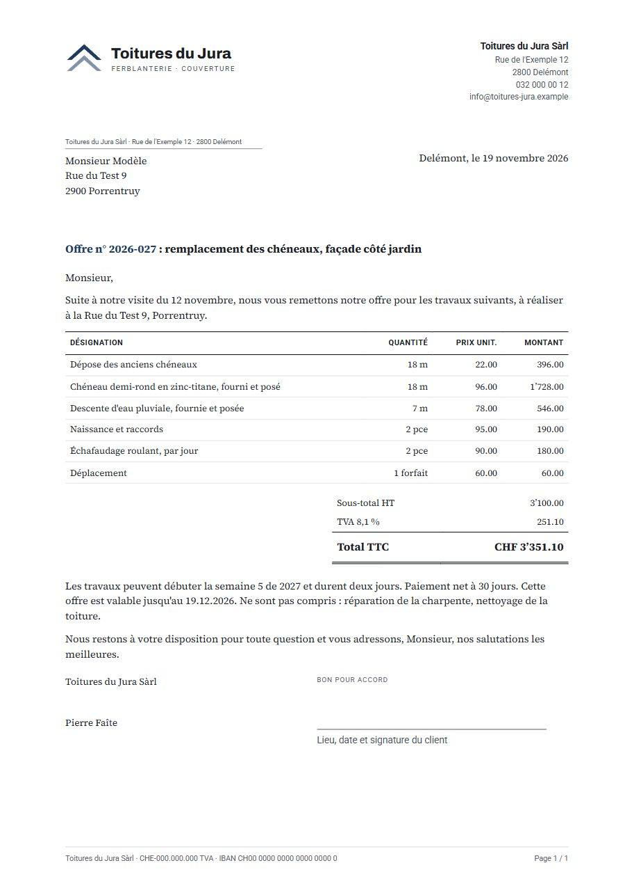
Lettre Nouveau
Pour : ferblantier, couvreur, artisan qui écrit aux régies et aux clients âgés.
Structure : une lettre. Adresse à gauche, lieu et date, formule d'appel, phrase d'introduction, tableau, phrase de fin, signature.
Demande : civilité du client, date de la visite, deux phrases types réglables.

Atelier Refait
Pour : menuisier, ébéniste, agenceur, tout travail sur mesure.
Structure : logo centré, empattements, double filet, lignes pointillées.
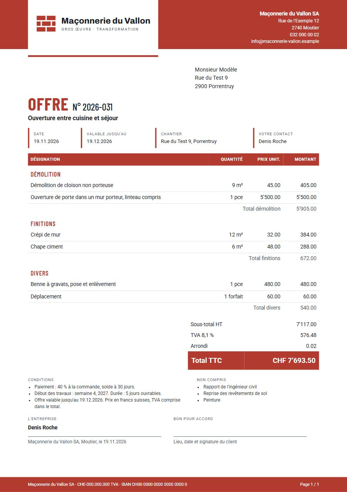
Bandeau Refait
Pour : maçon, gros œuvre, façadier, entreprise qui veut sa couleur en grand.
Structure : bande de couleur d'un bord à l'autre, onglet du logo, total plein, bande de pied.
À prouver : la bande d'un bord à l'autre dans le PDF.
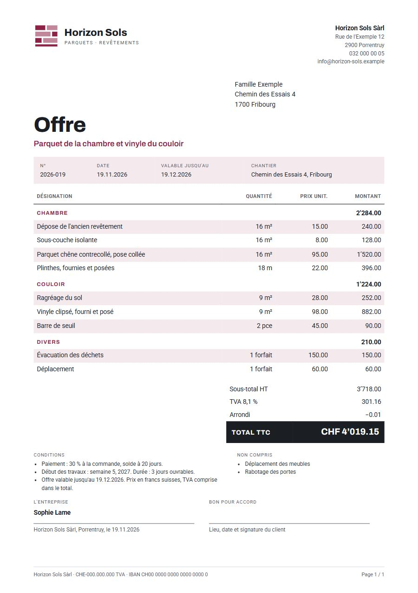
Moderne Refait
Pour : poseur de sols, cuisiniste, agencement, jeune entreprise.
Structure : grand titre, bandeau d'informations teinté, lignes alternées, total sur anthracite.
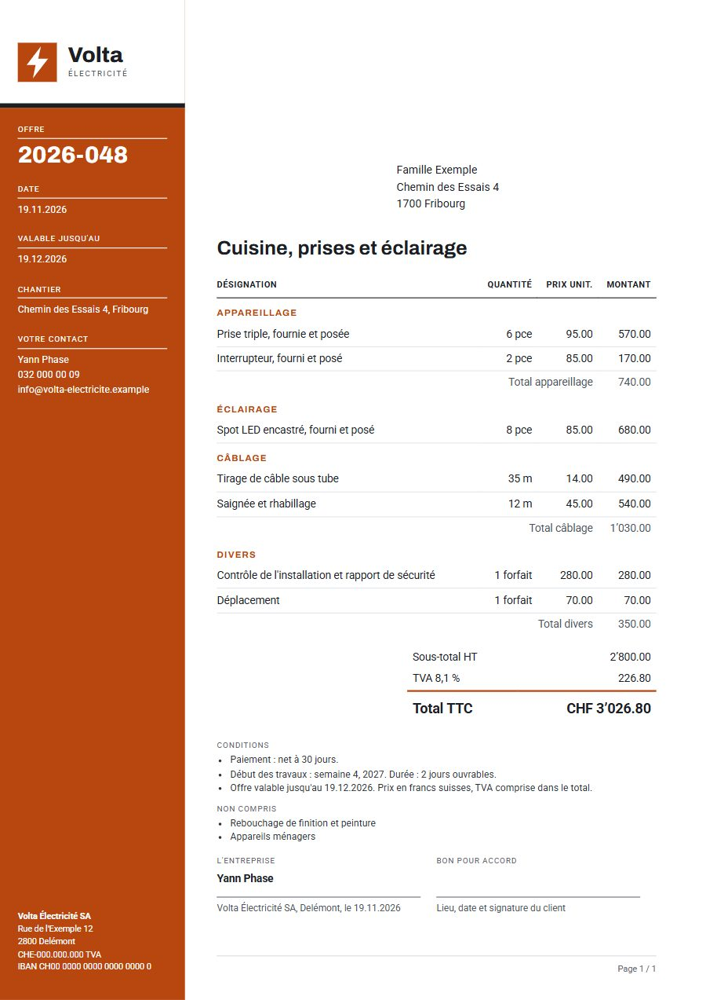
Latéral Nouveau
Pour : électricien, stores, cuisines : l'artisan dont le client rappelle souvent.
Structure : colonne de couleur à gauche avec le numéro, les dates, le chantier et le contact ; le tableau a toute la hauteur.
À prouver : la colonne répétée sur chaque page du PDF.
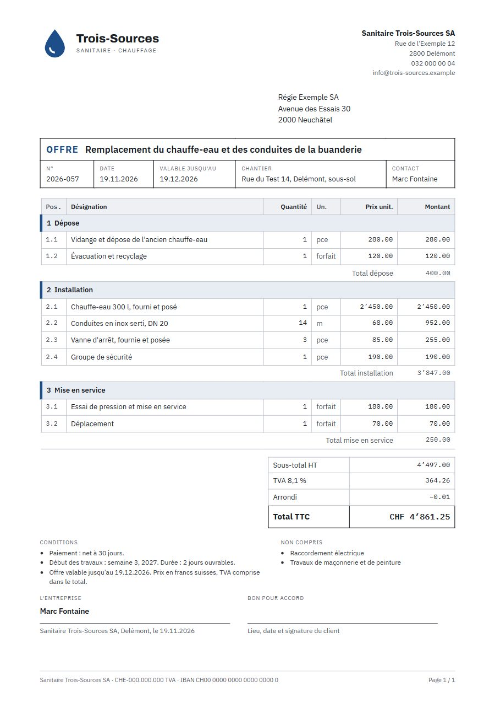
Technique Refait
Pour : sanitaire, chauffage, ventilation, électricité.
Structure : cartouche de plan, positions numérotées (1.1, 2.3), grille, unité à part.
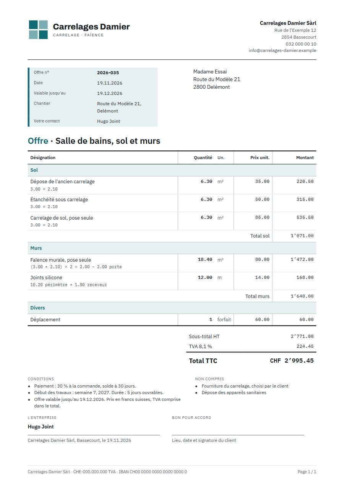
Métré Nouveau
Pour : carreleur, plâtrier, peintre en façade, étancheur : tout ce qui se paie à la surface.
Structure : le calcul de la quantité sous chaque ligne (« 3.00 × 2.10 »), quantités en gras, colonnes séparées.
Demande : garder le calcul dicté. Aujourd'hui l'application garde le résultat et les mots entendus, sans le calcul.
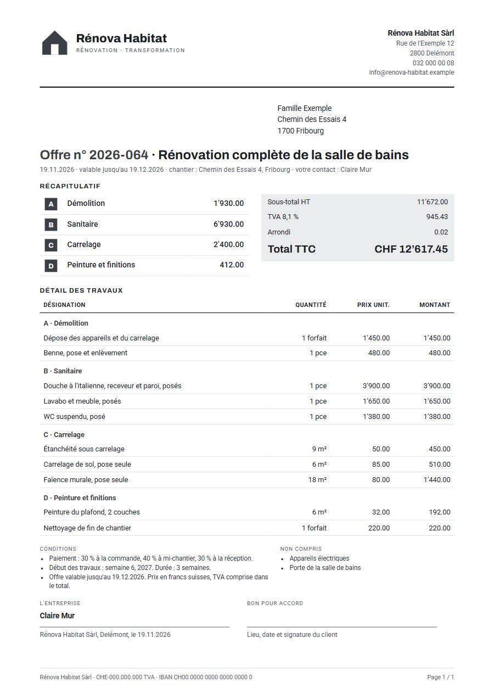
Récapitulatif Nouveau
Pour : rénovation complète, entreprise générale, offre à plusieurs corps de métier.
Structure : les lots et le total d'abord (A, B, C, D), le détail ensuite. Le client lit le prix avant les lignes.
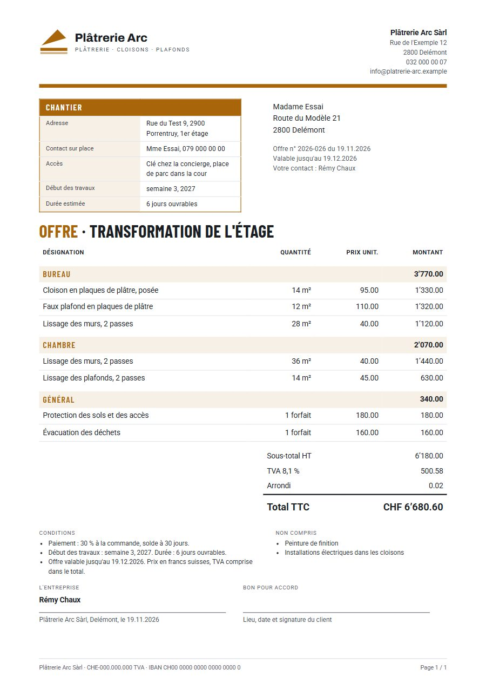
Chantier Nouveau
Pour : plâtrier, peintre, rénovation d'appartement : l'offre par pièce.
Structure : fiche de chantier en tête (adresse, contact sur place, accès, début, durée), une bande par pièce avec son total.
Demande : contact sur place et accès, en plus des champs du point 2.
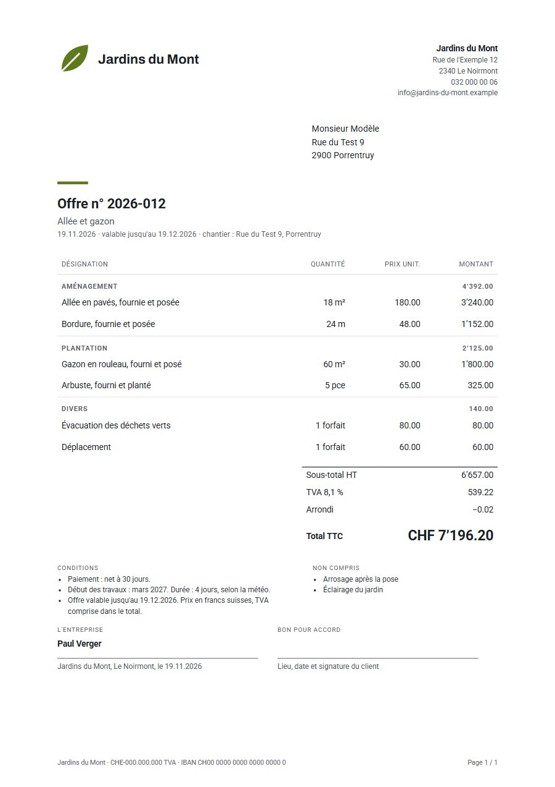
Épuré Refait
Pour : paysagiste, indépendant, petite offre.
Structure : beaucoup de blanc, aucun filet de couleur dans le tableau, postes en petites capitales.
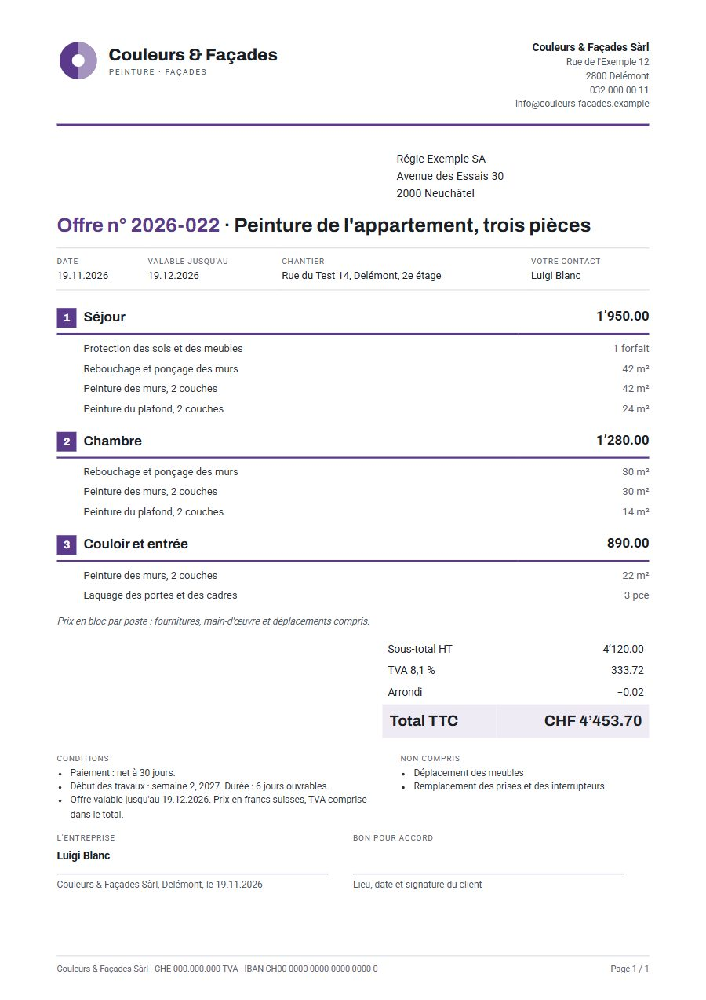
En bloc Nouveau
Pour : peintre, façadier, artisan qui vend un prix par pièce ou par poste.
Structure : un prix par poste, les travaux et les quantités dessous, sans prix unitaire. Luigi a dicté un prix « en bloc » le 17 novembre.
Demande : un prix saisi par poste, ou la somme des lignes affichée sans le détail.
Douze, le plafond
Douze suffit, et c'est le plafond. Chaque modèle est déjà multiplié par le logo et la couleur de l'artisan. Sur un téléphone, douze vignettes font six rangées ; au-delà, l'artisan se perd dans les détails.
La différence entre les modèles compte d'abord. Les six actuels sont un seul squelette en six habillages : même en-tête, même tableau, mêmes totaux. Les six ajouts changent ce que le document dit et dans quel ordre.
Ce qui manque encore relève de fonctions, valables pour les douze : options hors total (« en option : laquage des portes »), photos du chantier, offre sur plusieurs pages, version allemande. En faire des modèles donnerait trente gabarits.
Le coût de douze : douze gabarits à tenir en offre et en facture avec QR, soit vingt-quatre rendus à contrôler à chaque changement du document.
Deux propositions pour l'écran de choix
Un modèle proposé selon le métier. Le compte porte un métier depuis le 19 novembre. Le plâtrier ouvre sur Chantier, le sanitaire sur Technique, le carreleur sur Métré ; les onze autres restent à un toucher.
Quatre familles pour ranger les douze : Classiques, Couleur, Détaillés, Simples (les filtres de la planche ci-dessus).
Ce que ça demande
La preuve d'abord
- Un PDF d'essai par le générateur de l'application : polices intégrées, bande d'un bord à l'autre, colonne latérale répétée, puis une offre de quarante lignes sur trois pages.
- Une impression pliée dans une enveloppe à fenêtre, pour les douze.
- Les douze en facture, avec la section de paiement QR.
Les données nouvelles
- Sur l'offre : adresse du chantier, début, durée, non compris. Pour tous les modèles.
- Dans les réglages : nom du contact.
- Propres à un modèle : calcul du métré (Métré), prix par poste (En bloc), contact sur place et accès (Chantier), civilité et date de visite (Lettre).
Ce que cette planche ne prouve pas
- Aucun rendu PDF. Les images viennent d'un navigateur.
- Le logo réel d'un artisan (photo, JPEG à fond blanc) : les logos dessinés ici flattent les modèles. L'onglet blanc de Bandeau et de Latéral est fait pour ce cas.
- Une couleur claire (jaune, orange vif) : la règle d'assombrissement de l'application est reprise, les douze couleurs montrées sont déjà sombres.
- L'avis d'un artisan.
Source des feuilles : generateur.html, dans ce dossier. Elle servira de point de départ aux gabarits.
Tes réponses